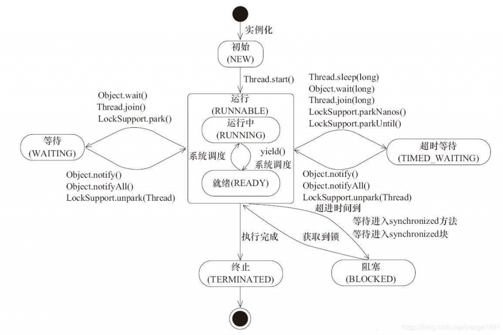
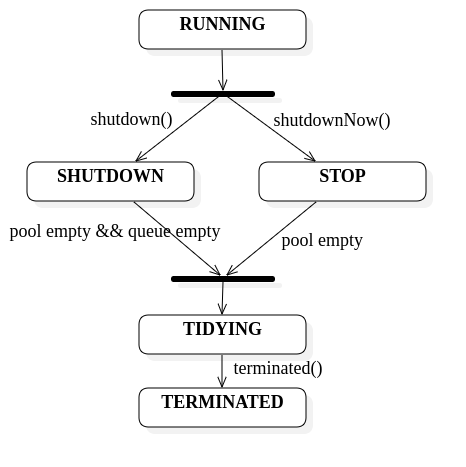
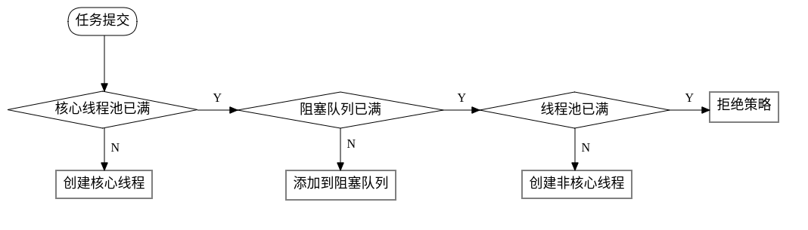
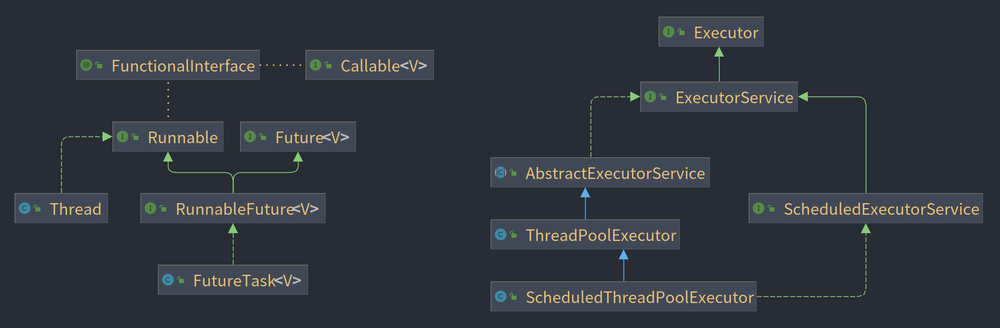

#线程
#创建线程的方法
- 继承 Thread 类，重写
run()方法。 - 实现 Runnable 接口，重写 run() 方法。
- 实现 Callable 接口，重写 call() 方法。
- 使用线程池。
#Runnable 和 Callable 的区别
Callable 接口和 Runnable 接口用于封装应该由另一个线程执行的任务。Runnable 对象可以通过 Executors 工具类中的 callable(Runnable task) 和 callable(Runnable task, T result) 转换成 Callable 对象。
Runnable是 JDK 1.0 以来就有的接口，Callable是从 JDK 1.5 开始引入的。Runnable实例可以由 Thread 类以及 ExecutorService 运行，而Callable只能由 ExecutorService 运行。Runnable不接受任何的参数也不返回值，Callable可以返回任务计算的结果。Runnable不能抛出已检查的异常，Callable可以抛出已检查的异常。Runnable需要覆盖run()函数，callable需要覆盖call()函数。
|
|
#线程的状态
- NEW：尚未启动的线程的线程状态。有了一个线程的实例，但还没调用线程的 start 方法。
- RUNNABLE：可运行线程的线程状态。包括就绪（READY）和正在运行（RUNNING），当处于就绪状态的线程获得了处理器时间后就变成正在运行。
- BLOCKED：线程阻塞等待锁。
- WAITING：等待其他线程的操作，只能通过其他线程唤醒。
- TIMED_WAITING：等待其他线程，但不会无限期的等待，过了指定时间之间之后自动唤醒。
- TREMINATED：已终止线程的线程状态，线程已完成执行。

与线程休眠有关的方法：
| 方法 | 休眠时线程状态 | 需不需要捕获 InterruptedException | 是否会释放持有的锁 | 其他 |
|---|---|---|---|---|
| Thread.sleep() | TIMED_WAITING | 需要 | 不会 | 必须指定休眠的时间 |
| Object.wait() | 带参数为 TIMED_WAITING；不带参数为 WAITING | 需要 | 会 | 可以通过 notify() 或者 notifyAll() 唤醒，但是要在 wait() 之后，否则会丢失唤醒信号。notify() 是**随机**唤醒一个线程。必须获得对象上的锁才能执行对象的 wait() 方法。 |
| LockSupport.park() | WAITING | 不需要，但也会响应中断 | 不会 | 通过二元信号量实现的阻塞，可以通过 unpark() 唤醒，如果 unpark() 在 park() 之前，可以保证下次 park() 时不被阻塞。 |
🔖 park() 方法是等待许可，许可是一个二元的信号量，要么为 0 要么为 1。如果此时没有许可，那么线程需要阻塞等待，调用 unpark(Thread) 可以解除阻塞；如果在 park() 之前调用了 unpark(Thread)，那么**下一次的 park() 不会被阻塞。多次调用 unpark(Thread) 也只能是下一次**不被阻塞！
#start() 方法与 run() 方法的区别
start 方法启用一个线程，并使其进入就绪状态，当获得处理器时间片之后就可以开始运行 run 方法。结果是两个线程同时运行：当前线程（从对 start 方法的调用返回，不需要等待 run 的执行）和另一个线程（执行其 run 方法）。如果在主线程中直接调用 run 方法将会把它当做是主线程下的一个函数去运行，不会以多线程的方式去执行。
#线程的优先级
线程的优先级从 1 到 10，定义了 MIN_PRIORITY = 1，NORM_PRIORITY = 5，MAX_PRIORITY = 10。可以通过 getPriority 和 setPriority 来获得和更改线程的优先级。在设置线程优先级时，首先要检查线程是否可访问，并且设置的优先级不能大于 MAX_PRIORITY 也不能大于线程所属的线程组的最大优先级。
#线程的终止
- 任务执行完毕，程序正常退出。
- 使用退出标志，某些线程需要长时间的运行，只有外部满足某些条件才会退出。例如 run() 方法中是一个
while(!exit)的循环体，只有设置的 exit 标志为 true 时才退出，exit 是一个外部的条件。 - 使用
Interrupt()方法。如果线程处于阻塞状态，会抛出 InterruptedException 异常，可以捕获该异常使线程停⽌的事件得以传播；如果不是阻塞状态就会设置线程的中断状态。 - 使用
stop()。已经弃用，不安全。
#创建线程池的方法
#为什么使用线程池
提前创建好多个线程，放入线程池中，使用时直接获取，使用完放回池中。可以避免频繁创建和销毁、实现重复利用。
- 提高响应速度（减少了创建新线程的时间）
- 降低资源消耗（重复利用线程池中线程，不需要每次都创建）
- 便于线程的管理
#使用 ThreadPoolExecutor 类
#线程池的状态
|
|
使用一个 AtomicInteger 类型的 ctl 字段来表示线程池的两个概念字段：线程池的运行状态（run state，32 位整型的高 3 位）和线程池的有效线程数（work count，低 29 位）。因此，在设置线程池最大线程数时，可以设置到 Integer.MAX_VALUE，但实际上要受到表示范围 CAPACITY 的限制，最大为 $2^29 - 1$。使用 runStateOf() 在 ctl 中获得运行状态，使用 workerCountOf() 在 ctl 中获得存活的线程数，使用 ctlOf() 获得 ctl 本身。
各个状态的含义：
- RUNNING：接受新的任务并处理阻塞队列中的任务。
- SHUTDOWN：不接受新的任务，但是处理阻塞队列中的任务。
- STOP：不接受新的任务，不处理阻塞队列中的任务，并中断正在进行的任务。
- TIDYING：所有任务已经终止，workCount 等于 0，转换到 TIDYING，将会执行
terminated()钩子方法。
线程池的状态转变：
- RUNNING -> SHUTDOWN：调用
shutdown()时，可能隐含在finalize()中。 - (RUNNING or SHUTDOWN) -> STOP：调用
shutdownNow()。 - SHUTDOWN -> TIDYING：当阻塞队列和线程池都为空时。
- STOP -> TIDYING：当线程池为空时。
- TIDYING -> TERMINATED：
terminated()方法执行完毕进入 TERMINATED 状态。

shutdown() 和 shutdownNow() 的区别：
shutdown() 方法在实现上调用的了 interruptIdleWorkers() 方法，中断所有等待任务的线程（空闲线程），也即不再接受新的任务但是会处理阻塞队列中的任务，进入的状态是 SHUTDOWN，关闭的速度慢但是较为安全；shutdownNow() 在内部调用的是 interruptWorkers()，中断所有的线程，并返回在阻塞队列中的任务列表，进入 STOP 状态，关闭的速度较快但是因为会打断任务的执行所以存在风险。
#线程池构造函数
重点在于理解构造方法的参数，从而避免资源耗尽
|
|
以参数最多的一个构造方法解释各个参数的含义，其他的构造方法就是设置了一些默认值。
- corePoolSize：核心线程池的大小，核心线程池中的线程是不会被空闲超时销毁的，除非设置了 allowCoreThreadTimeOut。
- maximumPoolSize：线程池能够包含的最大的线程数，可以设置成整型的最大值相当于无界，但内部其实是要受到 CAPACITY 的限制。
- keepAliveTime：超过核心线程池的线程会在经过 KeepAliveTime 的空闲时间后被终止。
- unit：keepAliveTime 的时间单位。
- workQueue：阻塞队列，用于在执行任务之前保存任务的队列。此队列将仅保存由
execute方法提交的Runnable任务！ - threadFactory：创建线程使用的工厂。使用自定义的线程工厂可以对线程命名，更改线程组、优先级、守护状态等。
- handler：当线程达到了最大线程数并且阻塞队列也已经满了的时候的处理策略。
#任务提交给线程池的处理
- 如果不使用
public boolean prestartCoreThread()和public int prestartAllCoreThreads()，前者在线程池启动时创建一个核心线程使其空闲等待任务，后者在线程池启动时创建所有的核心线程并返回创建的线程数，那么启动时线程池内没有线程；默认情况下，当有任务到来的时候才会创建一个线程，每当新到一个任务就创建一个新的线程去执行，直到达到核心线程池的大小。 - 当线程数达到 corePoolSize 后，再来新的任务就尝试排队（添加到阻塞队列），如果成功添加到阻塞队列也不意味着任务一定能被成功执行，需要有一些额外的判断（如下源代码中说明）。
- 当阻塞队列满了的时候，在线程数小于 maximumPoolSize 时，尝试创建新的线程去处理任务。
- 否则，执行拒绝策略。

|
|
#execute() 和 submit() 的区别
-
execute()是Executor接口中的方法，其参数为Runnable对象，返回值为空，因此不会返回任何的结果，用于执行不需要返回值的任务。 -
submit()是ExecutorService接口中的方法，ExecutorService接口继承了Executor接口，并且添加了submit()方法，用来提交需要返回值的任务。submit()方法返回一个Future对象，Future表示了一个任务的生命周期，提供了相应的方法来判断任务是否已经完成或者取消。Future的get()方法的行为取决于任务的状态，如果任务已经完成，会立即返回或者抛出一个异常，如果没有完成，get()就会阻塞直到任务完成。
|
|
#排队策略和阻塞队列的类型
workQueue 的类型为 BlockingQueue<Runnable>，它用来存放等待执行的任务。
排队策略有以下三种：
- Direct handoffs.（直接移交） 在这种策略中使用的是
SynchronousQueue，它没有容量，每个插入操作必须等待另一个线程的删除操作，反之亦然。它将任务直接交给工作线程，本身不存储任务；如果没有空闲的线程可以执行任务，那么任务排队失败，就会创建一个新的线程。通常需要将 maximumPoolSize 设置为Integer.MAX_VALUE来避免拒绝新提交的任务。在处理可能具有内部依赖关系的任务集时，此策略可避免死锁。如果任务的平均到达速度超过线程的处理速度的话，可能会导致**线程无限增长**。 - Unbounded queues.（无界队列） 使用无界队列（例如没有预定义容量的
LinkedBlockingQueue，默认为Integer.MAX_VALUE）在核心线程池中的线程都在繁忙时将新任务都放在队列中，线程池中的线程数最大为 corePoolSize，因此 maximumPoolSize 的没有任何影响。每个任务之间相互独立时，使用这种策略是合适的。这种排队方式有助于平滑瞬间的请求突发，但是当任务继续以超过处理速度的速度到达时，可能会导致队列无限增长。 - Bounded queues.（有界队列） 使用有界队列（例如
ArrayBlockingQueue）和有限的 maximumPoolSize 可以防止资源耗尽。使用时需要权衡最大线程数和队列的大小：使用大型队列和小型池可以最大限度地减少 CPU 使用、操作系统资源和上下文切换开销，但可能会导致人为的低吞吐量；使用小队列通常需要更大的池大小，这使 CPU 更繁忙，但可能会遇到无法接受的调度开销，这也会降低吞吐量。
🔖 以上所提到的“界”、“限”都是指 Integer.MAX_VALUE，等于 Integer.MAX_VALUE 就认为是无界的。
🔖 LinkedBlockingQueue 包含有指定初始容量的构造函数和默认的构造函数，默认构造函数设置队列最大值为 Integer.MAX_VALUE，可以通过给定容量来构建一个基于链表的有界队列使用。链接队列通常比基于数组的队列具有更高的吞吐量，但在大多数并发应用程序中性能更不可预测。
🔖 前面提到 workQueue 中仅保存由 execute 方法提交的 Runnable 任务。那么 submit 提交的任务怎么存到阻塞队列中呢？ThreadPoolExecutor 继承了 AbstractExecutorService 类，AbstractExecutorService 类实现了 ExecutorService 接口，AbstractExecutorService 类重写了 submit 方法。
|
|
从上面的源代码可以看出，对于 submit 提交的 Runnable 以及 Callable，都对其使用 newTaskFor 进行了封装返回一个 RunnableFuture。RunnableFuture 实现了 Runnable 和 Future 接口，这样就可以将 Callable 的任务变成 Runnable 去执行了。

#拒绝策略
ThreadPoolExecutor.AbortPolicy默认策略，丢弃任务并抛出 RejectedExecutionException 异常。ThreadPoolExecutor.CallerRunsPolicy调用 execute 自身的线程运行任务。这提供了一种简单的反馈控制机制，可以降低提交新任务的速度。ThreadPoolExecutor.DiscardPolicy直接丢弃，不抛异常，仅使用在不关注任务的完成结果的罕见情况中。ThreadPoolExecutor.DiscardOldestPolicy如果线程池没有关闭的话，丢弃最旧的未处理任务，即阻塞队列中头部的任务，然后重试 execute。在此过程中，可能还会被拒绝，重复该过程。
#addWorker 函数
|
|
#Worker 的作用
Worker 是内部封装类，线程池创建线程时，会把线程封装成 Worker，Worker 中的 firstTask 是线程要执行的第一个任务，执行完后循环获取阻塞队列中的任务去执行。
#线程池的监控
getPoolSize()：线程池中当前的线程数。getActiveCount()：线程池中当前活动的线程数。getLargestPoolSize()：线程池⾥曾经创建过的最⼤线程数量。getTaskCount()：获得已经安排执行的任务的大致数量。getCompletedTaskCount()：获得已经完成的任务的数量。
🔖 通过继承 ThreadPoolExecutor 并重写其中的 beforeExecute() 和 afterExecute() 来定义在执行之前和执行之后的行为。
#使用 Executors 工具类（不推荐）
|
|
- newFixedThreadPool：corePoolSize 和 maximumPoolSize 相同，可以控制线程的最大并发数。使用无界队列，当线程池中的线程已经达到最大值且所有线程都在工作时，新来的任务在阻塞队列中排队。
- newSingleThreadExecutor：创建一个使用单个工作线程在无界队列上运行的 Executor。如果该单线程在关闭前的执行过程中因失败而终止，则如果需要执行后续任务，则新线程将取代它。任务保证按顺序执行，并且在任何给定时间不会有多个任务处于活动状态。newSingleThreadExecutor() 与 newFixedThreadPool(1) 不同，前者返回的是包装之后的 FinalizableDelegatedExecutorService，不可以重新配置线程池，而后者可以重新配置线程池。配置线程池指改变线程池的属性，比如通过 setCorePoolSize 和 setMaximumPoolSize 等方法改变线程池中的线程数。
- newCachedThreadPool：创建一个线程池，使用 SynchronousQueue 根据需要创建新线程，但有空闲线程时将重用以前构造的线程。这些池通常会提高执行许多短期异步任务的程序的性能。如果可用，对执行的调用将重用以前构造的线程。如果没有可用的现有线程，将创建一个新线程并将其添加到池中。六十秒内未使用的线程将被终止并从缓存中删除。因此，保持空闲足够长时间的池不会消耗任何资源。
- newScheduledThreadPool：创建一个线程池，可以安排命令在**给定延迟后运行**
schedule()，或定期执行scheduleAtFixedRate()以及scheduleWithFixedDelay()。
🔖 scheduleAtFixedRate(command, initialDelay, period, unit) 是在一个 initialDelay 时间后首次启用任务，然后每隔一个 period 时间再启用该任务，不强调之前的任务是否已经完成。scheduleWithFixedDelay(command, initialDelay, delay, unit) 是在一个 initialDelay 时间后首次启用任务，然后等到任务结束后隔上 delay 的时间后再启用该任务。